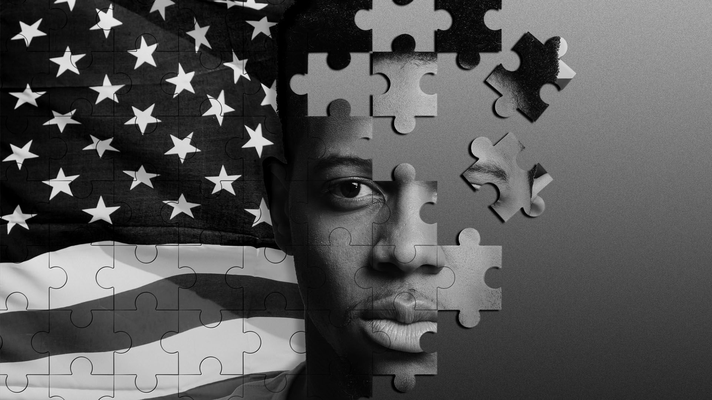
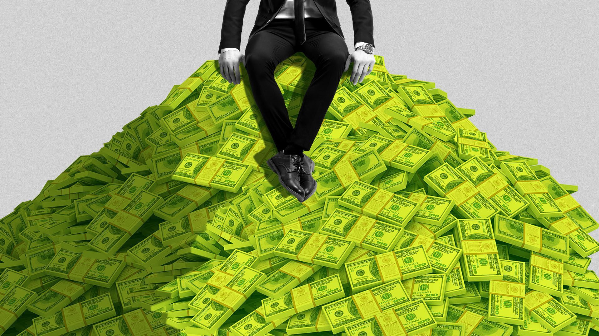

America's unfinished business
America's unfinished business
The fury over George Floyd's killing is erupting as the U.S. faces a looming wave of business bankruptcies, likely home evictions and a virus pandemic that will all disproportionately hit African Americans.
Why it matters: What these seemingly disparate issues share in common is that they emanate from systemic abuses that calls to action and promised reforms have yet to meaningfully address.
Consider the extrajudicial killings in the past decade of Trayvon Martin, Philando Castile, Tamir Rice, Sandra Bland and numerous other black Americans for which there was no fundamental legal resolution. The overwhelming majority of their killers went free and some retained their jobs in law enforcement. Be smart: Likewise, much of the economic fallout we're seeing because of the coronavirus stems largely from unresolved issues left over from the 2008 Great Recession.
After the recession, none of the top executives who had originated, boxed or sold the collateralized debt obligations and improperly rated mortgage-backed securities faced criminal charges. And many of the big banks that profited from selling the subprime mortgages that precipitated the fallout not only survived, but thrived in the recession's aftermath. The root cause of the 2008 crisis — rampant corporate greed — was never sufficiently contained.
Many of the meager protections created for everyday Americans through the Dodd-Frank financial reform act have since been clawed back by the Trump administration and the Fed. And much of the reckless behavior that Dodd-Frank prohibited at banks simply moved to the unregulated shadow banking sphere and continues at much the same pace. Between the lines: The swift action from the Federal Reserve and Congress that saved the financial system had the unintended effect of exacerbating the nation's growing income inequality.Last year, the Census Bureau reported the U.S. had its highest level of income inequality ever.
What's next: The coronavirus pandemic looks to be heading in much the same way.
A new recession has left at least 34 million people on government unemployment assistance and likely millions more without a job — and the difference between the reality for working- and middle-class African Americans and wealthy white Americans is stark. The virus has affected black Americans at a much higher rate, largely a result of widespread economic inequality that has kept black folks in less affluent neighborhoods with more people packed into less space. Though no vaccine has been developed, governors in every U.S. state have begun pulling back 'stay at home' orders and allowing people to freely congregate in large groups and enclosed spaces again.
More black Americans have lost their jobs than white Americans as a result of the coronavirus-driven recession, and more stand to face evictions as most rent rather than own. By contrast, wealthy Americans — who are disproportionately white — are more likely to have the flexibility to retreat to second homes or vacation homes.Existing home values actually increased in April and are poised to continue this year, real estate economists predict. Many on Wall Street have cheered the reopening of local and state economies around the country, but with that reopening comes the removal of pandemic relief policies like eviction moratoriums.
Increased government unemployment benefits are set to expire right as many Americans will find themselves permanently out of a job or without an employer to go back to. Meanwhile, the wealthy are increasing their savings rate.They're seeing their investment portfolios bounce back. Consider statistics from the Economic Policy Institute, a Washington-based think tank focused on economic issues facing low and middle-income Americans.The data show white middle-income households — earning between $37,201 and $61,328 per year — own an average $86,100 in assets.
By contrast, assets average $11,000 for black families and $8,600 for Latino families in the same income range. A 2015 survey by Ariel asked Americans with household income of at least $50,000 whether they owned stocks or stock mutual funds.Eighty-six percent of whites said they did.For African-Americans, the number was 67%. Go deeper:
Posted On: 2020-05-30T00:00:00
Posted By: Dion Rabouin


Content Date: 2020-05-30
Download Date: 2021-05-15
Document ID: L0C04CCBQ